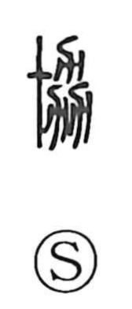

協

Uncategorized
Kun: | On: kyou
cooperate ・ cooperation ・ harmonize ・ coordinate
Explanation
In its older form, 協 is built on the graph 劦, which joins three instances of 力. Shirakawa takes 力 not as “strength,” but as the pictograph of a plough (the form of 耒), so the three ploughs evoke people working the fields together. From this image of shared agricultural labor, the character comes to mean uniting one’s efforts—helping, coordinating, and gathering minds toward a common purpose. Hence its uses that suggest adjusting things to fit, doing something together, and even bringing plans to fruition.